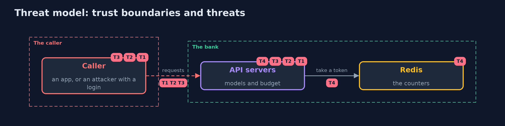

Threat Model — API Security with Spring Boot and Redis
A threat model answers four questions: what are we protecting, who or what could harm it, how, and what do we do about it. This one covers this project's own demo system, not a production deployment. Domain: a bank API.
Scope
A Spring Boot bank API called by authenticated customers. It covers what a body may set, what a response may show, how much a caller may ask for and the counter that limits it. It does not cover access to other customers' objects, which belongs to broken-access-control.
What we protect (assets)
- The customers' roles, credit limits and risk scores.
- The card numbers and PIN hashes.
- The availability of the API.
Who and what acts on the system
- A customer with a valid login who sends crafted bodies.
- An attacker who scripts requests with a stolen login.
- A developer who adds a field to the record.
Trust boundaries
A trust boundary is a line that data or a request crosses between parts that trust each other differently. Threats cluster where those lines are.
- The caller to the API: the body, the query and the headers are all untrusted.
- The API to Redis: a password on the loopback address.

Each dashed box is a trust boundary. A rose tag such as T1 shows where the threat of that number, in the table below, applies.
Threats, using STRIDE
STRIDE is a checklist of six kinds of threat: Spoofing (S), Tampering (T), Repudiation (R), Information disclosure (I), Denial of service (D), Elevation of privilege (E).
| Id | Kind | Threat | Where it shows up | Control in this project | What is left |
|---|---|---|---|---|---|
| T1 | Elevation of privilege | A caller sets a field that is not theirs to set | NaiveAccountsController.update |
A request record, fail-on-unknown-properties, and a controller that copies named fields only | A field added to the request record without review |
| T2 | Information disclosure | A response carries fields or records the caller should not see | NaiveAccountsController.one, list |
A response record, a masked card, a directory with id and name only | A new field added to a view |
| T3 | Denial of service | A caller asks for everything, or for ever | list, the whole API |
A page ceiling and a budget per caller | A caller who spreads requests over many logins |
| T4 | Denial of service | The budget is per server, or the counter is down and the API runs without one | LocalRateLimiter, RedisRateLimiter, RateLimitFilter |
One atomic script in a store every server shares, and a refusal when it cannot answer | A long Redis outage that stops the API |
Assumptions
- Callers have valid logins; the lesson is about what they can do with one.
- Redis is reachable only from the API servers.
Out of scope
- Reading another customer's account, which has its own project.
- Attacks on Redis itself.
How the tests check this
ApiSpringTeststarts real servers and checks mass assignment, the whole-record response, the unlimited loop, unknown fields, validation, partial updates, the view and the masked card, the page ceiling, the 429 and Retry-After, the refill, the cap, separate callers and the budget per server.RedisLimiterTestuses a real Redis for the shared budget, the exact count under concurrency, the bucket's expiry and the refusal when Redis stops answering.DemoRunsTestcompares the whole demo with the golden output.
Where this model goes next
The next module, identity-and-access, moves from limits on what a caller may do to proving who the caller is: tokens, OAuth 2.0 and OpenID Connect.